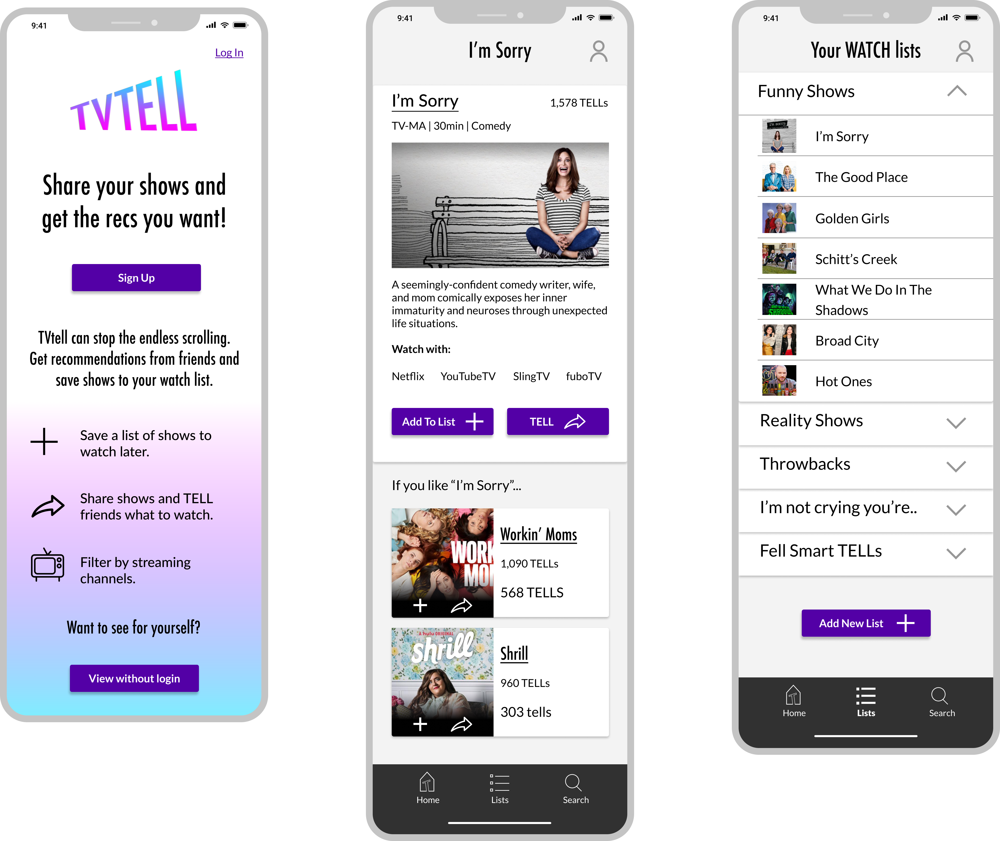

TVTELL
Social application for sharing and discovering TV shows.
View Prototype
Social application for sharing and discovering TV shows.
View PrototypeTV TELL is an application for sharing T.V. shows with friends. You’re able to share through the app by sending and receiving “TELLs”. You can keep track of the shows you want to watch by creating WATCH lists.
The endless scroll of finding something to watch can be daunting. There are so many TV shows and you want to watch something that is recommended by someone who knows your taste. You need a place to keep track of the shows that you plan to watch and get recommendations from friends.
TVTELL is an application that will store your shows and filter by the channels you have access to. You can send and receive shows easily through the app, so you never have to face the endless show scroll again.
To create this application I wanted to get some input from people who watch TV shows. My main goal was to find out how they get recommendations, how they save or remember their recommendations and if they like what they're doing.


Twelve user stories were created with acceptance criteria. In doing this I was able to prioritize the focus of the application.
Now that I knew what the high priority tasks were, I created user flows to better understand the flow of the application I was to create. I wanted to have a clear vision before I jumped onto the computer, so I created rough sketches and then went to draw.io to project digitally enhanced versions.

By creating user flows I was able to have a clear vision into the functionality of my designs. I then moved into sketching wire frames and transfering my sketches into vector design in figma.
After my wireframes were compelte I tested their usability on three educators. It was important to test teachers because I wanted to make sure it was the most functional and user friendly for our target audience. From the testing I learned that most functions worked as intended however almost everyone had a few frustrations or confusions.
- Landing page: needed to have a sign up field, so new users were more inticed and had less steps or clicks to join.
- Navigation: side bar needed to stay present and static on all pages.
- Size: needed to be decreased and designed at 100%, so viewers could see all elements of the page.
Branding was an ongoing task until the final touches of the high fidelity mock up were complete. I wanted to include an apple core to represent the common core standards of the state. Apples also have an associationw the teachers and education in general. I added the magnifying glass to enclose the core and also incorporate the resource aspect of the platform. The final style guide can be found here.
For the shape of the logo I referenced mega phones. I warped the letters to appear as if they were coming out of a megaphone. This coincides with someone sending a “TELL”.

After creating sketches I chose a few to work digitally using Figma and Photoshop. I then created a preference test with four of them.
I learned from the preference test that 60% of the 25 people I tested preferred the bottom left logo. I moved forward with this design until my user testing gave feedback that the design was flat and the colors did not fit within the application. I then adjusted the logo as you can see below.
I experimented with many color pallets. I was most inspired by chalkboards, graphite, and brick walls that call to mind the very basic structure and symbolism of education.
From the wireframes I added icons, color, and referred to my style guide for text and sizing. I wanted the call to actions on the screen to be obvious to the user so I sparingly used color aside for the call to action icons and buttons. I also wanted to include a features page with the same icons on the landing page. This proved to be helpful to a user who used it as a guide for what the icons meant.
After testing the first hi-fi mock up I noticed users were confused by the TELLs. They had a hard time deciphering if the TELLs were from them or for them. Also, one tester felt the homepage as a new user was unmotivating. A new user would not have any TELLs ready for them because they just signed up. However, there are no action steps for them to change this. I remedied this situation by updating the homepage.
The problem of the endless scroll and mismanagement of reccomendations for TV shows has been solved with TVTELL. The application is successful in the regard that it created a space for friends to share recommendations and save those recommendations.
When I first started to create the application I knew there would be a lot of features that would be neat to incorporate. I did not want to go down the road to scope creep, so I stuck to my most viable products. With each screen I asked, how does this help the user see, save, or share. I incorporated solid infastructure to assure the user would have access to the MVPs at all time. The bottom toolbar created an ever present simple navigation system to support this notion.
After testing a few changes needed to be made. Mainly to make the user easily understand what a “TELL” is as it is a new terminology that was confusing to users at first. I did this by combining the TELL with something familiar, an inbox. Users are familiar with message and inboxes. When they can interpret the TELL as a message they can better understand the concept of the application and new terminology.
During this project I learned to test thoroughly and specifically. The high fiidelity mock ups need to be tested early in order to catch changes that could affect the functioning of the application. I did this by specifically testing for the MVPs in multiple ways throughout the users experience on the application.